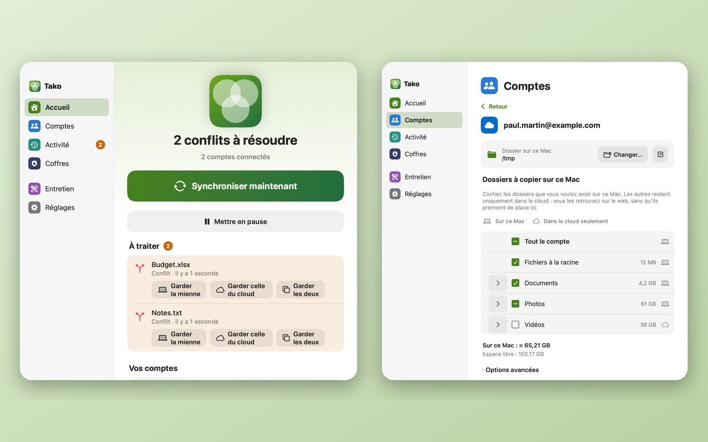

Tako
Tous vos clouds dans une seule application.
All your clouds in one app.
Gratuit. macOS 13 Ventura ou plus récent, Mac Apple Silicon. Linux (Debian/Ubuntu) et Windows ensuite.
Free. macOS 13 Ventura or later, Apple Silicon Mac. Linux (Debian/Ubuntu) and Windows next.

Ce que fait Tako
What Tako does
Plusieurs comptes
Several accounts
OneDrive, Google Drive, Dropbox, et vos NAS en WebDAV ou SFTP. Chacun a son dossier sur le Mac.
OneDrive, Google Drive, Dropbox, and your NAS over WebDAV or SFTP. Each has its own folder on the Mac.
Sur le Mac ou dans le cloud
On the Mac or in the cloud
Cochez les dossiers à copier. Les autres restent dans le cloud, sans prendre de place.
Tick the folders to copy. The others stay in the cloud and take no room.
Rien ne se perd
Nothing gets lost
Une modification des deux côtés garde les deux versions. Arrêt de sécurité en cas de suppression ou de chiffrement en masse.
An edit on both sides keeps both versions. A safety stop on mass deletion or mass encryption.
Coffres chiffrés
Encrypted vaults
Des dossiers chiffrés avant envoi : personne, pas même le cloud, ne peut les lire.
Folders encrypted before upload: nobody, not even the cloud, can read them.
Versions et « Remonter le temps »
Versions and “Go back in time”
Retrouvez une ancienne version d'un fichier, ou un dossier tel qu'il était hier.
Find an earlier version of a file, or a folder as it was yesterday.
Simple
Simple
Six rubriques, de gros boutons, 7 langues. Les conflits se règlent depuis l'accueil.
Six sections, big buttons, 7 languages. Conflicts are settled from the home screen.